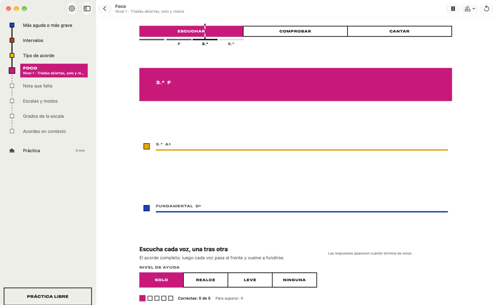
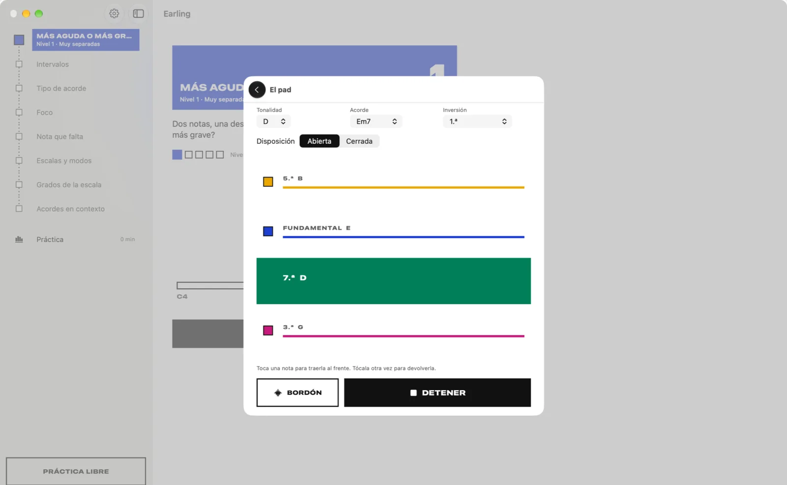
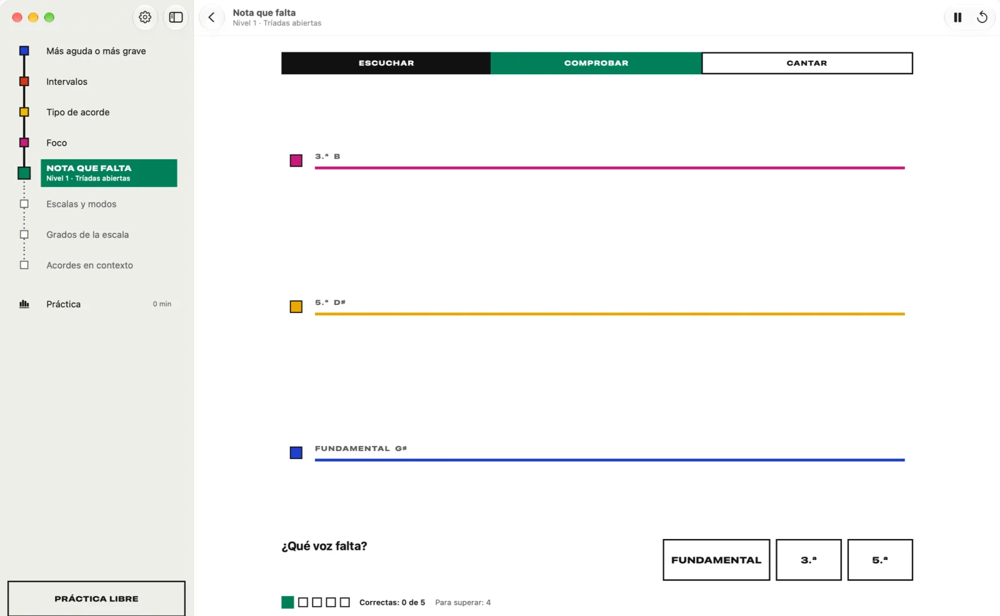
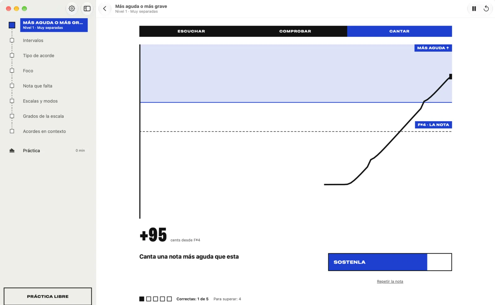
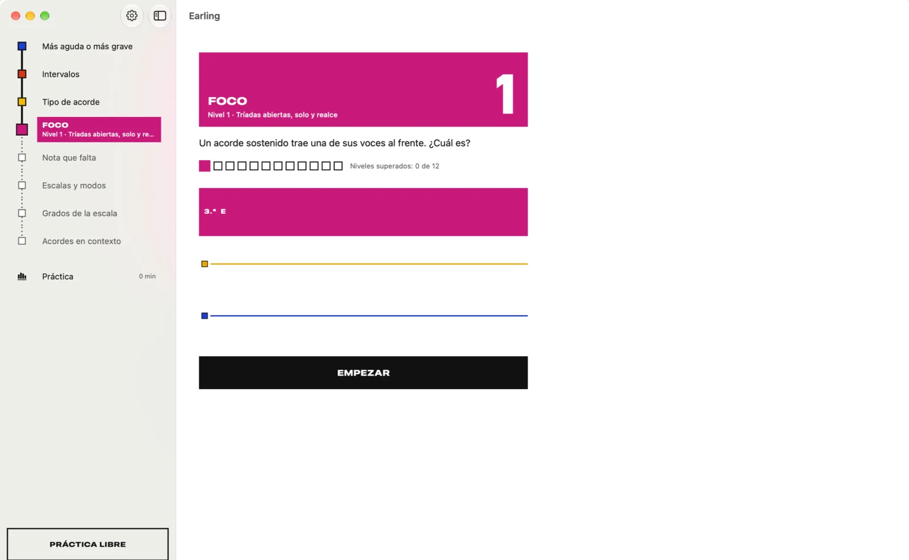
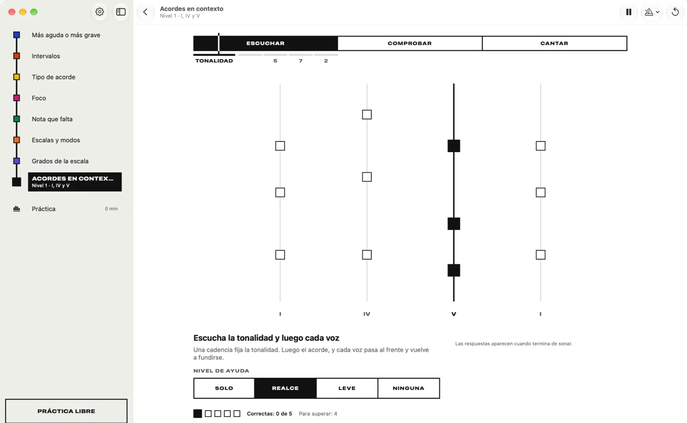
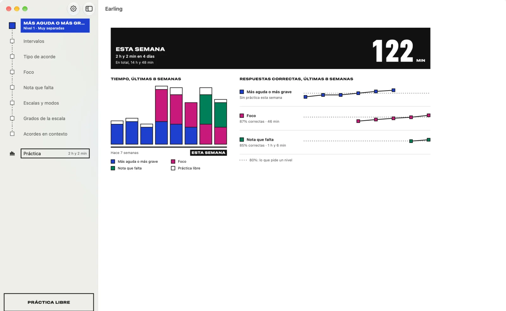

Escucha las voces dentro de un acorde.
La app hermana de Fretling para el oído, en Mac, iPad y iPhone. Un acorde sostenido trae al frente cada una de sus voces; luego encuentras una de oído y la cantas. Ocho modos en un solo camino, de dos notas a los acordes de una tonalidad.
Llega pronto al App Store: Mac, iPad y iPhone Lee la guía

Una voz al frente
Un acorde sostenido trae al frente cada voz por turno mientras se ve su nombre: la fundamental, la 3.ª, la 5.ª. Luego una pasa al frente sin nombre y tú dices cuál es. Nivel a nivel la ayuda se desvanece, de un solo a ningún realce.
El primer nivel de Foco es gratis; la ayuda que se desvanece, los acordes cerrados e invertidos y los de séptima son Pro. Pro

La nota que falta
El acorde suena completo y luego otra vez sin una de sus voces. Encuentra el hueco en el acorde y canta la nota que lo llenaba.
El primer nivel de Nota que falta, con tríadas abiertas, es gratis. Los acordes invertidos, los de séptima y dos notas faltantes son Pro. Pro

Y luego cántala
Cada ronda termina en Cantar. El micrófono dibuja tu voz como un trazo y te sostiene en la nota, en la octava que te quede cómoda, durante medio segundo. Los audífonos ayudan; con bocinas, el acorde se aparta mientras cantas.
¿Sin micrófono? Cantar se vuelve un toque y nada más cambia. De noche, apaga Cantar en Configuración. Cantar es gratis en todos los modos.

Ocho modos, un camino
De dos notas a los acordes de una tonalidad: Más aguda o más grave, Intervalos, Tipo de acorde, Foco, Nota que falta, Escalas y modos, Grados de la escala y Acordes en contexto. Cada modo abre el siguiente.
Más aguda o más grave, Intervalos y Tipo de acorde son gratis en todos sus niveles, y el primer nivel de cada otro modo también: 25 de los 47. Pro

Míralo de tres formas, en una tonalidad
Dibuja un acorde como Columna de alturas, Rueda de alturas o Carriles de voces. En Nota que falta, Grados de la escala y Acordes en contexto, el bordón vuelve las respuestas grados de la tonalidad, y una cadencia puede fijar la tonalidad antes.
Las tres vistas, el bordón y la cadencia son gratis.

Práctica libre, y ocho semanas de ella
Práctica libre sostiene el acorde que elijas y te deja traer cada voz al frente, o tocar cualquier modo en un nivel que ya abriste.
La página Práctica muestra los minutos de esta semana y luego el tiempo y las respuestas correctas por modo de las últimas ocho semanas.

Gratis para siempre. Pro lleva cada modo hasta el final.
Qué es gratis
- Más aguda o más grave, Intervalos y Tipo de acorde, todos los niveles
- El primer nivel de los otros cinco modos, así todo el camino queda abierto
- Escuchar, Comprobar y Cantar en cada ronda
- Las tres vistas, el bordón y la cadencia
- Práctica libre y la página Práctica
Qué añade Pro
- Foco hasta el nivel 12: menos ayuda, acordes cerrados e invertidos, acordes de séptima
- Nota que falta hasta el nivel 5: acordes invertidos, acordes de séptima, faltan dos notas
- Los siete modos, y la menor armónica y la melódica
- Todos los grados de la escala, en tonalidades mayores y menores
- Todos los acordes de la tonalidad, invertidos, y los de séptima
Una compra, una vez: sin suscripción. Prueba Pro gratis 14 días. El desbloqueo cubre cada Mac, iPad y iPhone con tu cuenta de Apple, y admite En familia. Nada que hoy sea gratis pasa después detrás del desbloqueo. La comparación completa
Privado por diseño
Earling funciona en tu dispositivo. No hay cuenta, ni analíticas, ni seguimiento. Pide un solo permiso, el micrófono, y escucha solo mientras cantas: tu voz se oye en el dispositivo mientras cantas y nunca se graba ni se envía. Tu progreso se queda en tu dispositivo. La política de privacidad